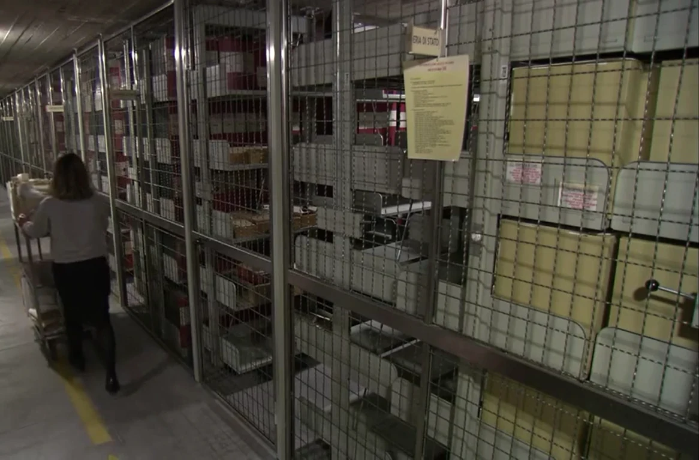

FILE 01 / THE DOOR
A sealed threshold
When a place is controlled, who has access—and who decides which record is allowed to exist?
A document dated in the future. A death in the archive. A machine speaking in a language of authority.
Explore the fictional evidence, meet three witnesses and try a Latin decoding challenge drawn from the questions behind the novel.
This is interactive companion fiction, not a genuine Vatican record or historical discovery.
When a place is controlled, who has access—and who decides which record is allowed to exist?

The record describes a future event. Its presence is undeniable; its meaning remains in dispute.
The machine speaks Latin. But a convincing voice is not the same as lawful authority.
Photo credits: Vatican archive corridor and Vatican archive shelving — Vatican Television Center / Collective, CC BY 3.0; Computing-center racks — Derrick Coetzee, CC0. Images used as documentary/illustrative references, not scenes from the fictional investigation. Cropped for responsive cards.
This fictional fragment poses a real interpretive problem. Translate the final word to reveal the archivist's note.
VERITAS NON EST POTESTAS.Latin clue: veritas means truth; non est means is not. What does potestas mean here?
Truth is not power. The fact that a claim can be established does not mean that its bearer has the authority to command others.
In DOMINUS, the conflict is not simply whether a system can produce an answer. It is whether anyone should grant it the final word.
This exercise is an original companion puzzle, not an excerpt or an official archival translation.
Read the novel's openingThe sequence below is an interpretive guide to the novel's opening premise, not a reproduction of confidential or authentic Vatican documents. Dates beyond the established opening are deliberately withheld.
Every document enters the historical record through a place, a custodian and a chain of transmission. In the fictional story, entry to the archive is the first threshold.
A timestamp that should not exist makes a simple archival question dangerous: can we establish what this record actually is?
The archivist, theologian and specialist in verification approach the same problem with different methods.
The investigation leads to a question larger than the anomaly itself: who has the legitimate right to act on a claim?
Each answer opens the next file. No account is required, and your responses stay in your browser during this visit. The puzzles are original educational companions, not quotations from the manuscript.
TESTIMONIUMTranslate this Latin noun into English. Hint: something that can be given by a witness.
MEMORIATranslate this Latin noun into English. Hint: what institutions preserve but cannot wholly control.
A recorded statement can outlive the person who made it. A machine may reproduce that statement convincingly. Yet neither a document nor an algorithm automatically possesses authority over the life it describes.
You have completed the short companion challenge. The novel takes these problems further, through characters, evidence and choices.
Why a persuasive sentence is not the same as evidence—or a lawful command.
Open the research dossierDiscover why context, custody and historical criticism matter to every archival claim.
Explore the historical notesExplore the distinction between knowing facts and possessing authority to decide.
Read the backgroundFollow essays that connect documentary history and speculative fiction.
Visit the author's Substack
The person nearest the record, and the first to confront its implications.

A linguist and theologian who knows that interpretation changes the weight of evidence.

For her, every extraordinary assertion must pass through a test of measurement and verification.
Latin functioned for centuries in ecclesiastical, legal and scholarly records. Archives preserve documents whose provenance, chronology and context matter. Canon law distinguishes technical knowledge from legitimate competence.
Read the research companionThe characters, impossible future-dated file, investigation and extraordinary AI premise are fiction. Their presence in the novel must not be mistaken for statements about real Vatican institutions.
Explore the fictional opening